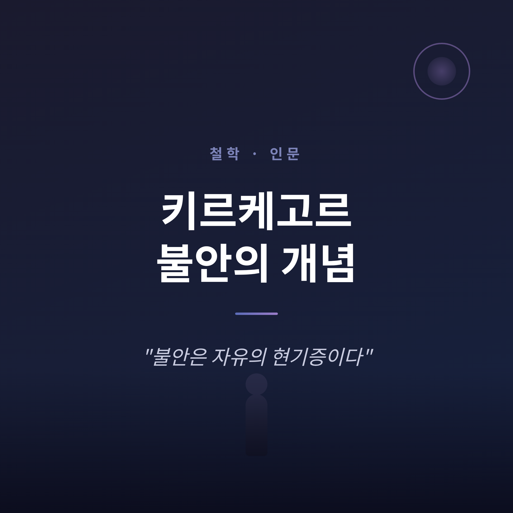
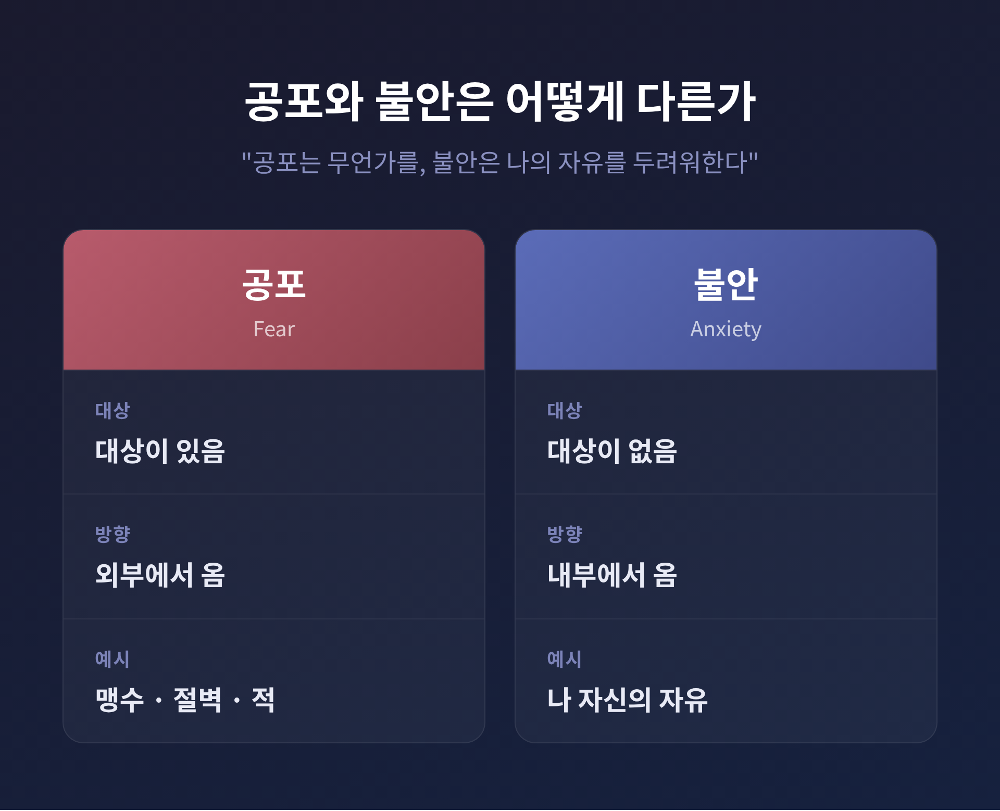
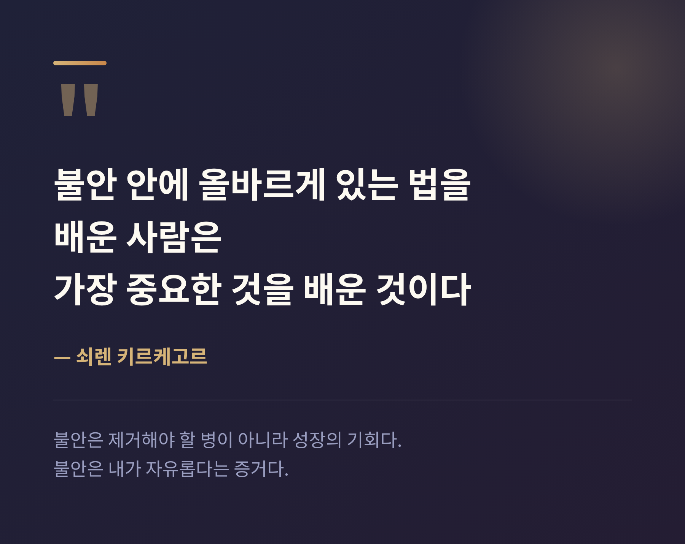

키르케고르 불안의 개념
— "불안은 자유의 현기증이다"

키르케고르의 불안은 없애야 할 병이 아닙니다. 자유로운 존재인 인간이 자기 가능성 앞에서 느끼는 근원적 기분입니다. 이번 글에서는 그 핵심 명제 "불안은 자유의 현기증이다"를 정리해 보겠습니다.
세 가지만 먼저 짚겠습니다. 불안은 공포와 다르고, 절벽 비유로 가장 잘 이해되며, 끝내 우리를 성장시키는 기분이라는 점입니다.
『불안의 개념』, 어떤 책인가
쇠렌 키르케고르는 1813년에 태어나 1855년에 세상을 떠난 덴마크의 철학자이자 신학자입니다. 흔히 "실존주의의 아버지"로 불립니다.
『불안의 개념』은 1844년 6월 17일에 출간되었습니다. 그는 이 책을 본명이 아니라 "비길리우스 하우프니엔시스"라는 가명으로 냈습니다. 라틴어로 "코펜하겐의 파수꾼"이라는 뜻입니다.
가명은 단순한 익명이 아닙니다. 독자가 그 입장을 키르케고르 본인의 견해로 받아들이지 말고 스스로 평가하도록 의도한 장치, 곧 간접 전달의 방법이었습니다.
이 책의 본래 과제는 원죄라는 신학적 문제를 심리학으로 다루는 것이었습니다. 신학과 심리학을 교차시킨 책인 셈입니다. 그래서 키르케고르는 『죽음에 이르는 병』과 함께 "근대 심리학의 아버지"로 불리기도 합니다.
불안과 공포는 어떻게 다른가
키르케고르 불안 개념의 출발점은 공포와의 구분입니다.
공포에는 대상이 있습니다. 맹수, 절벽, 적처럼 밖에서 나를 위협하는 분명한 무언가에 대한 반응입니다.
불안에는 대상이 없습니다. 불안은 밖이 아니라 안에서, 곧 나 자신의 의식과 자유로부터 옵니다. 자유롭게 선택할 수 있는 내가 무엇을 선택할지 모른다는 사실, 그것이 불안의 정체입니다.
한 문장으로 압축하면 이렇습니다. "공포는 무언가를 두려워하고, 불안은 나 자신의 자유를 두려워한다."

자유의 현기증 — 절벽 위에서
가장 유명한 명제가 여기서 나옵니다. "불안은 자유의 현기증이다."
높은 절벽 끝에 선 사람을 떠올려 보시면 좋겠습니다. 그는 서로 다른 두 감정을 동시에 느낍니다.
첫째는 떨어질지 모른다는 공포입니다. 중력과 추락이라는 외부 위험에 대한 것입니다.
둘째는 더 깊은 곳에서 올라옵니다. 자신이 스스로 뛰어내릴 수도 있다는 자각에서 오는 어지러움입니다. 뛰어내리지 않는 것은 매 순간 내가 선택하고 있는 일이며, 언제든 그 선택을 버릴 수도 있습니다.
이 두 번째가 바로 자유의 현기증입니다. 나를 떨게 하는 것은 절벽이 아니라 나 자신의 절대적 자유입니다.
키르케고르는 우리가 모든 도덕적 선택에서 같은 어지러움을 경험한다고 보았습니다. 가장 끔찍한 결정을 내릴 자유조차 내게 있음을 깨달을 때 느끼는 현기증입니다.
불안은 죄가 아니다
이 책은 본래 원죄를 다룹니다. 키르케고르는 전통 교리와 결정적으로 갈라섭니다.
그는 원죄가 성을 통해 유전된다는 견해를 거부했습니다. 대신 불안을 통해 죄가 세상에 들어온다고 주장했습니다.
여기서 중요한 점이 있습니다. 불안 자체는 죄가 아닙니다. 불안은 인간의 영혼이 자유라는 입을 벌린 심연 앞에 섰을 때 보이는 자연스러운 반응입니다.
그리고 이 추락은 보편적입니다. 아담이 죄로 무죄를 잃었듯이, 모든 사람도 같은 방식으로 자기 자신의 낙원에서 추락을 경험합니다.
불안이 정신적 차원의 것이라면, 영원한 것과 접촉하는 영적 차원에서 그것은 절망이 됩니다. 불안이 깊어지면 절망으로 건너가는 셈입니다.
오늘 우리에게 — 불안은 교육적이다
키르케고르의 통찰은 책 속에만 머물지 않았습니다. 그의 불안론은 하이데거, 사르트르, 카뮈 같은 20세기 사상가에게 토대를 제공했습니다. 다만 이들 상당수는 그의 종교적 결론은 받아들이지 않았습니다.
현대 심리학으로도 이어졌습니다. 심리학자 롤로 메이의 『불안의 의미』(1950)는 키르케고르 독해에 토대를 둔 박사논문에서 출발했습니다. 메이는 실존적 불안과 신경증적 불안을 구분했고, "실존적 심리치료의 아버지"로 불립니다.
키르케고르는 불안을 제거해야 할 병이 아니라 성장의 기회로 보았습니다. 불안은 내가 자유롭다는 증거입니다. 가능성이 전혀 없다면 불안도 없습니다.
그래서 그는 이렇게 말합니다. "불안 안에 올바르게 있는 법을 배운 사람은 가장 중요한 것을 배운 것이다."

끝으로 한 마디만 더 드리겠습니다.
불안을 없애려 즉각적 안락으로 도피하는 것은, 오히려 자기 자신으로부터의 도피일 수 있습니다. 다음에 까닭 모를 불안이 찾아온다면, 없애려 애쓰기 전에 한 번 물어보시길 권합니다. 이 어지러움이 내게 어떤 가능성을 가리키고 있는가.
불안이 무엇이냐고 다시 물으신다면, 그것은 자유의 대가이자 자유의 증거라고 답하겠습니다.